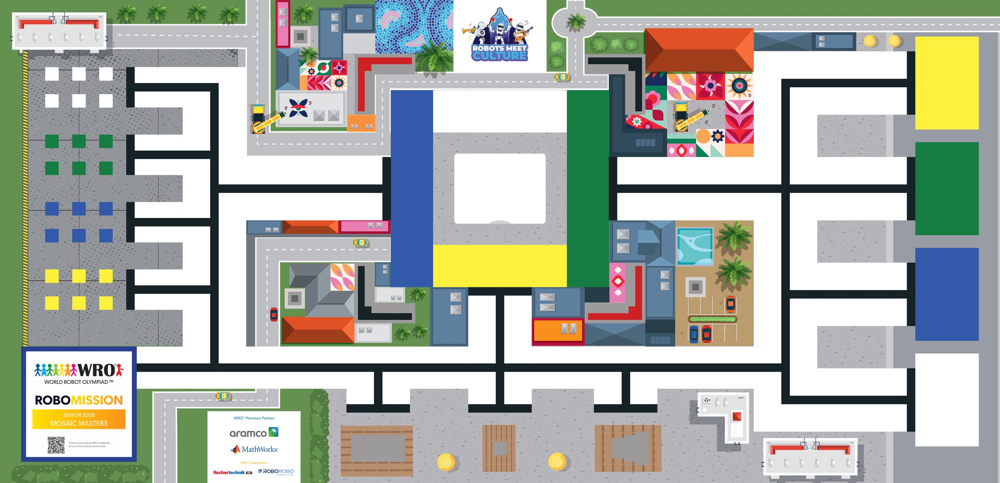

The WRO RoboMission Senior 2026 "Mosaic Masters" mat measures 2362 mm × 1143 mm (same overall field size as the other age categories, ± 5 mm tolerance per dimension). Your robot restores a damaged mosaic: collect coloured tiles, place them in the 3D-printed mosaic frame in the middle of the field, and deliver cement elements to their matching colour targets — while parking tools in the sponsor area, parking space and start area. The overlay adds a 50 mm reference grid, edge ruler, and labelled call-outs for every zone that scores points. Use the toolbar to measure distances, plan robot paths, check turn angles, and place a robot footprint. Click EXPORT CODE to convert a planned path into starter Python or Word Blocks pseudocode. Coordinates use a top-left origin (0, 0).

| Zone | X | Y | X2 | Y2 | W | H |
|---|
Tip: place a POSE at your robot's start to set the starting heading, then a PATH for the route. The generator will compute turn angles between segments automatically.
Starter code using PyBricks' standard DriveBase and
Motor classes. Check motor ports, turn direction and
lift/drop sign against your own build before running it.